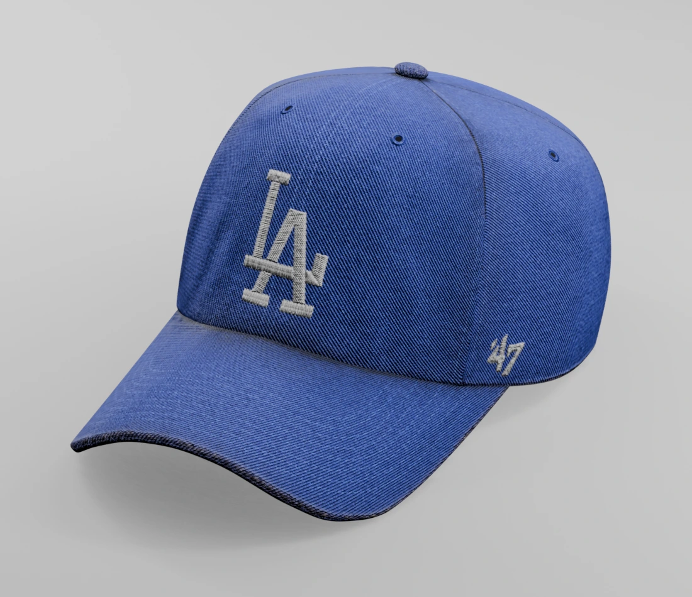
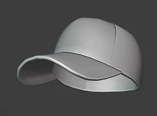
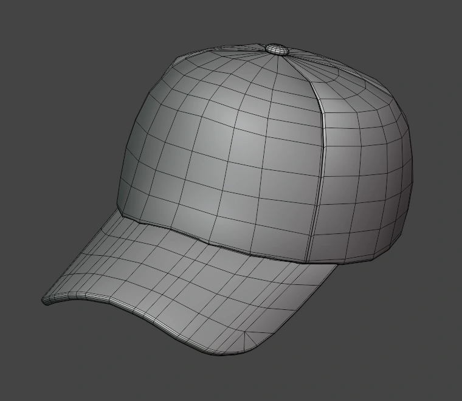

Cap / 모자
곡면과 봉제선, 천 재질을 표현한 모자 프롭.

01 / Modeling
모자의 곡면과 챙

02 / Mesh Flow
메시 플로우

ROLE & CREDITS
담당 작업
모델링, 텍스처링, 렌더링
곡면과 봉제선, 천 재질을 표현한 모자 프롭.

01 / Modeling

02 / Mesh Flow

ROLE & CREDITS
모델링, 텍스처링, 렌더링